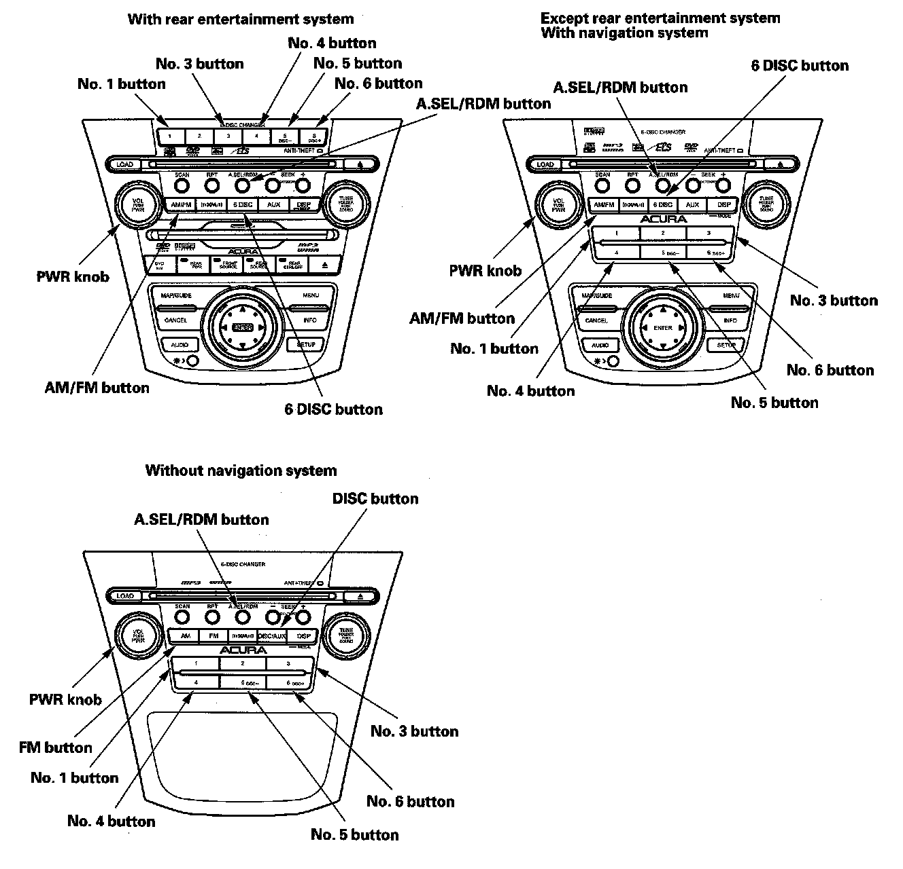
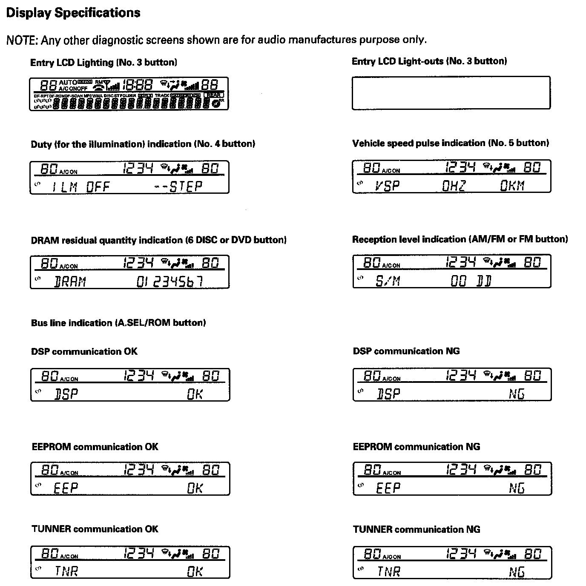
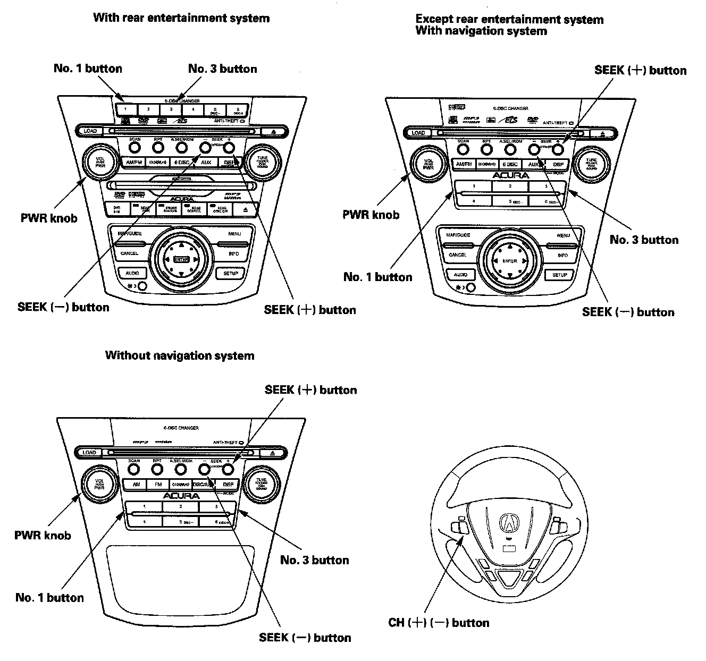
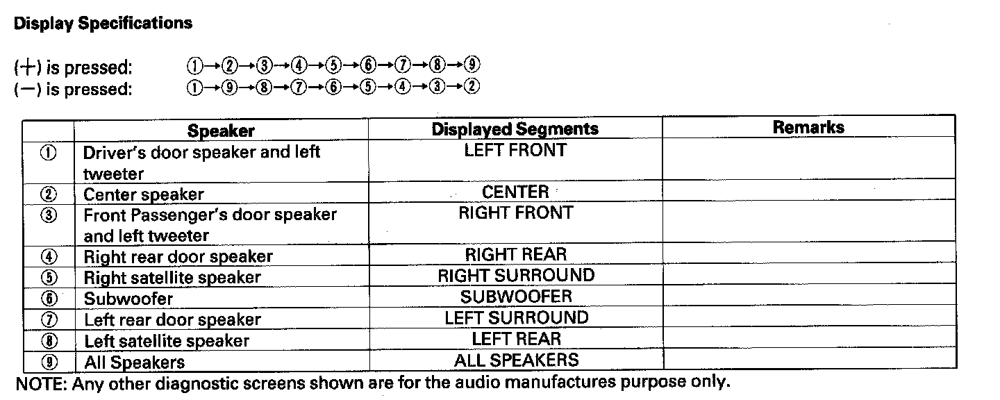

Audio System
Self-diagnostic FunctionThe audio system has a self-diagnostic function. To run the self-diagnostic function, do the following:
How to check for audio system condition
1. Turn the ignition switch to the ACC (I) or ON (II) position.
2. Turn on the audio unit.

3. Push and hold the "No. 1" and "No. 6" buttons. While holding the buttons, push the "VOL push PWR" knob to ON.
Release the buttons and the self-diagnostic function with begin.

4. By pressing a preset button, the input will trigger the diagnostic mode that is assigned to that preset switch.
"No. 3" button
Entire LCD lighting/light-out mode: Turns on/off the entire LCD to show the presence or absence of an LCD failure.
"No. 4" button
Duty (for the Illumination dim) indication mode: Indicates the duty for the Illumination dim.
"No. 5" button
Vehicle speed pulse indication mode: Indicates the vehicle speed pulse.
"6 Disc" or "DVD" button (Push and hold 5 sec.)
DRAM residual quantity indication mode: Indicates the DRAM residual quantity.
"AM" or "FM" button (Push and hold 5 sec.)
Reception level check mode: Indicates the reception level. When entering the reception level check mode, the AM/FM or FM button is used to change the S-METER, OFFSET, MP and USN (A/I).
"A.SEL/ROM" button
Bus line check mode: The audio communication line is checked between the DSP, EEPROM, and TUNER.
Speaker check mode
1. Turn the ignition switch to the ACC (I) or ON (II) position.
2. Push and hold the "No. 1" and "No. 3" buttons. While holding the buttons, push the "VOL push PWR" knob to ON.
Release the buttons and the speaker check mode will begin. A tone or low-frequency hum should sound from one speaker.


3. Each time you press the "SEEK" or "CH" button, the speaker outputs a beep sound in the listed order.
4. The speaker check mode will ends when you turn the audio unit off, or turn the ignition switch off.